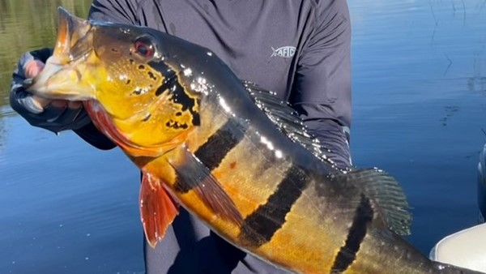
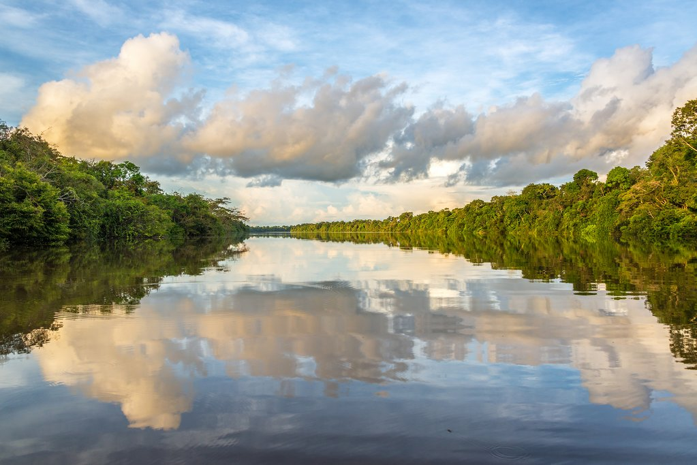
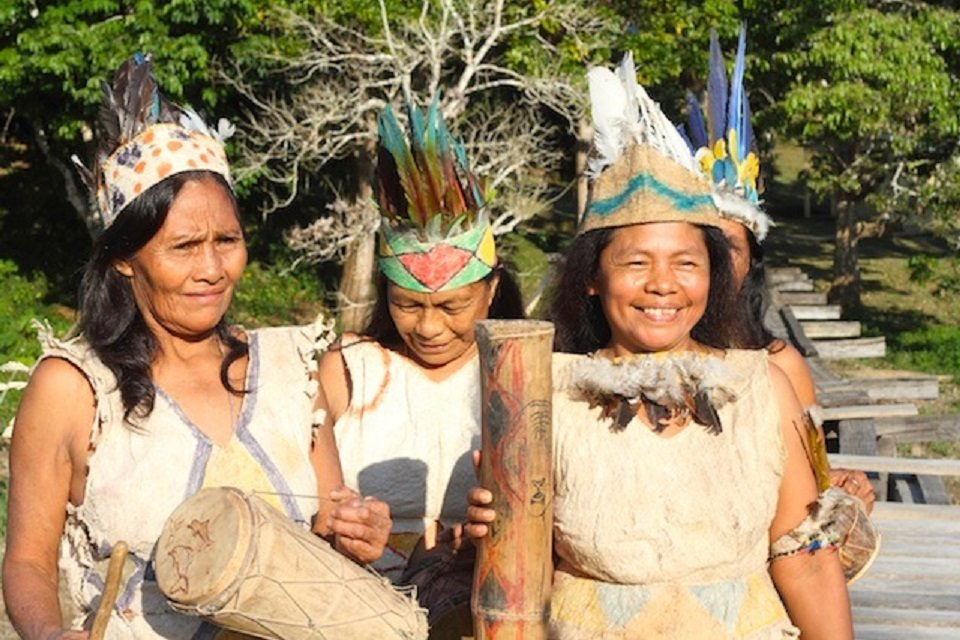

Tourists walk along trails on Monkey Island (21 miles from Leticia, 45 minutes by boat), learning about the various monkey species that live there. Normally, they eat insects, but if you have some bananas, the monkeys will come to you for food. Be careful; they will climb all over you. You can also tour flooded areas directly into Lake Tucuchira in traditional canoes, learning how people in these regions survive through traditional fishing.
Lotus Flower Reserve
Explore your surroundings via canoe, navigating through the inundated jungle. Glide silently through the submerged trees, allowing the soothing sounds of nature to envelop you as you navigate this enchanting aquatic realm. While exploring this area by canoe, what better time to immerse yourself in the experience by trying your hand at artisan fishing? With the guidance of experienced locals, learn the artistry of traditional fishing techniques passed down through generations.
Zacambú Lagoon
Zacambú Lagoon, nestled amidst the verdant landscapes of Colombia, is a hidden gem waiting to be discovered by adventurous souls seeking tranquility and natural beauty. Located in the heart of the Magdalena Department, this enchanting lagoon captivates visitors with its pristine waters, lush surroundings, and captivating wildlife. As one approaches Zacambú Lagoon, the air becomes infused with a sense of anticipation, beckoning travelers to immerse themselves in its serene embrace.
Connect with the Indigenous Communities

Visiting the Amazon is not just about exploring its vast wilderness; it's also an opportunity to connect with the rich cultural heritage of the indigenous communities that call this region home. One of the most profound and enlightening experiences one can have in the Amazon is to visit a local indigenous community.